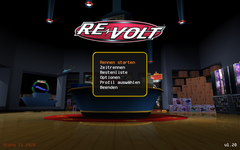
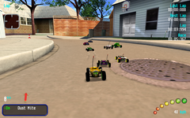
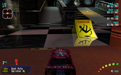
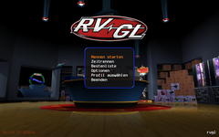
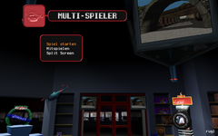
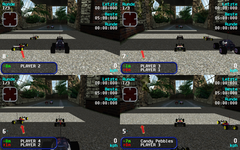
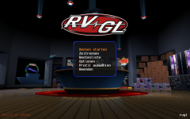

Re-Volt
Dieser Artikel wurde für die folgenden Ubuntu-Versionen getestet:
Ubuntu 16.04 Xenial Xerus
Ubuntu 14.04 Trusty Tahr
Zum Verständnis dieses Artikels sind folgende Seiten hilfreich:
Re-Volt ist ein 3D-Rennspiel, in dem man kleine ferngesteuerte Autos durch abwechslungsreiche Orte lenkt. Die Autos sind unzerstörbar, unterliegen aber optional abstufbarer, realistischer Physik und können verschiedene Extras aufsammeln, die ihnen selbst Vorteile oder den Kontrahenten Nachteile verschaffen. Das ausgeflippte Reportoire reicht von Batterien für kurzzeitige Beschleunigung über Feuerwerksraketen und lähmende Elektroschocks bis hin zu riesigen Bowlingkugeln, die man hinter sich fallen lassen kann.
Ein Leak des Quellcodes machte die Entwicklung von alternativen Community-Ports des Spiel möglich, die das Spiel auf den heutigen Stand der Technik bringen und z.B. HD-Bildschirmauflösungen ermöglichen.
Re-Volt sowie beide Community-Ports RV 1.2  und RVGL bieten sowohl Einzelspieler-Modi gegen computergesteuerte Kontrahenten als auch Mehrspieler-Partien am selben Rechner für 2-4 Spieler oder über Netzwerk für 2-12 Spieler. Das Spiel kann mit der Tastatur so wie mit handelsüblichen Gamecontrollern gesteuert werden, unter anderem mit denen der X-Box 360 und der Playstation 2.
und RVGL bieten sowohl Einzelspieler-Modi gegen computergesteuerte Kontrahenten als auch Mehrspieler-Partien am selben Rechner für 2-4 Spieler oder über Netzwerk für 2-12 Spieler. Das Spiel kann mit der Tastatur so wie mit handelsüblichen Gamecontrollern gesteuert werden, unter anderem mit denen der X-Box 360 und der Playstation 2.
|  |
| Hauptmenü |
|  |
| Rennstrecke 'Toys in the Hood' |
|  |
| Rennstrecke 'Museum' |
Installation¶
Das ursprüngliche Re-Volt läuft nur unter Windows oder unter Linux mittels Wine. Auf Grundlage des geleakten Quellcodes sind zwei Community-Ports entstanden, von denen einer auch nativ unter Linux läuft.
Originalversion installieren¶
Für beide Community-Ports benötigt man die Originalversion von Re-Volt. Diese kann man z.B. kostenlos von gamer-side.de 
 (ohne Musik) oder re-volt.me (mit oder ohne Musik) herunterladen. Die ZIP-Datei entpackt [2] man an einen Ort seiner Wahl, z.B. ~/Spiele/Re-Volt.
(ohne Musik) oder re-volt.me (mit oder ohne Musik) herunterladen. Die ZIP-Datei entpackt [2] man an einen Ort seiner Wahl, z.B. ~/Spiele/Re-Volt.
Hinweis!
Fremdsoftware kann das System gefährden.
1. Variante: RV 1.2 mit Wine¶
Der Community-Port RV 1.2 ist wie das Original nur für Windows erhältlich, läuft aber in der Regel problemlos mit Wine. Man lädt ihn von der offiziellen Projektseite herunter und entpackt [2] die ZIP-Datei ebenfalls in das Verzeichnis, in das man zuvor die Originalversion entpackt hat. Eventuelle Nachfragen des Überschreibens von bestehenden Dateien beantwortet man mit ja.
Falls noch nicht vorhanden, muss Wine installiert[1] werden:
wine
 mit apturl
mit apturl
Paketliste zum Kopieren:
sudo apt-get install wine
sudo aptitude install wine
Anschließend lässt sich RV 1.2 über einen Doppelklick auf REVOLT.EXE im Installationsverzeichis starten.
|  |
| Hauptmenü von RVGL |
2. Variante: RVGL in nativer Linuxversion¶
RVGL ist ein auf Grundlage des Original-Programmcodes komplett neu programmierter Community-Port für Windows und Linux. Grundsätzlich ist ein nativer Linux-Port der Wine-Version vorzuziehen, zudem RVGL auf modernen OpenSource-Komponenten wie OpenGL, OpenAL, SDL und ENet aufsetzt.
Zur Installation lädt man die aktuellste Version von RVGL von dessen Webseite oder aus dem offiziellen Forenthema herunter und entpackt [2] sie unter Beibehaltung der Verzeichnisstruktur des 7z-Archivs in das Re-Volt-Installationsverzeichnis.
Anschließend aus dem Installationsverzeichnis die Datei setup ausführbar gemacht[3] und aufrufen[4]:
chmod u+x setup ./setup
Dadurch werden die Dateien linuxkonform umbenannt und ein Starter angelegt.
Achtung!
Beinhaltet der Installatiospfad von RVGL Leerzeichen, wird der Starter von setup nicht korrekt angelegt. Entweder man verzichtet auf die Leerzeichen oder bearbeitet nach dem Aufrufen von setup die Datei ~/.local/share/applications/RVGL.desktop insofern, dass man in der Zeile Exec=... den gesamten Pfad in Apostrophe (
⇧ +
# ) setzt. Das Verzeichnis ~/.local ist ein verstecktes Verzeichnis.
Die nötigen Programmbibliotheken installieren¶
Nun installiert [1] man die nötigen Bibliotheken aus den offiziellen Paketquellen Ubuntus. Hierbei kommt es darauf an, ob man die 32- oder 64-Bit-Version von Ubuntu besitzt.
Ubuntu 32 Bit¶
libgl1-mesa-glx
libglew1.10 (Trusty)
libglew1.13 (Xenial)
libsdl2-2.0-0
libsdl2-image-2.0-0
libopenal1
libenet2a (Trusty)
libenet7 (Xenial)
libunistring0
libvorbisfile3
libmpg123-0
libflac8
mit apturl
Paketliste zum Kopieren:
sudo apt-get install libgl1-mesa-glx libglew1.10 libglew1.13 libsdl2-2.0-0 libsdl2-image-2.0-0 libopenal1 libenet2a libenet7 libunistring0 libvorbisfile3 libmpg123-0 libflac8
sudo aptitude install libgl1-mesa-glx libglew1.10 libglew1.13 libsdl2-2.0-0 libsdl2-image-2.0-0 libopenal1 libenet2a libenet7 libunistring0 libvorbisfile3 libmpg123-0 libflac8
Hinweis:
Meldungen über nicht gefundene Pakete libglew1.10 oder libglew1.13 sowie libenet2a oder libenet7 sind normal, weil je nach Ubuntu-Version (Trusty 14.04 oder Xenial 16.04) immer nur eine der zwei Paketversionen verfügbar ist. Siehe auch die folgenden zwei Abschnitte.
Ubuntu 64 Bit¶
RVGL wird bislang (Stand Mai 2016) nur für 32 Bit kompiliert, müssen in ein 64-Bit-Ubuntu die 32-Bit-Versionen der Bibliotheken mit dem Zusatz :i386 installiert werden:
libgl1-mesa-glx:i386
libglew1.10:i386 (Trusty)
libglew1.13:i386 (Xenial)
libsdl2-2.0-0:i386
libsdl2-image-2.0-0:i386
libopenal1:i386
libenet2a:i386 (Trusty)
libenet7:i386 (Xenial)
libunistring0:i386
libvorbisfile3:i386
libmpg123-0:i386
libflac8:i386
mit apturl
Paketliste zum Kopieren:
sudo apt-get install libgl1-mesa-glx:i386 libglew1.10:i386 libglew1.13:i386 libsdl2-2.0-0:i386 libsdl2-image-2.0-0:i386 libopenal1:i386 libenet2a:i386 libenet7:i386 libunistring0:i386 libvorbisfile3:i386 libmpg123-0:i386 libflac8:i386
sudo aptitude install libgl1-mesa-glx:i386 libglew1.10:i386 libglew1.13:i386 libsdl2-2.0-0:i386 libsdl2-image-2.0-0:i386 libopenal1:i386 libenet2a:i386 libenet7:i386 libunistring0:i386 libvorbisfile3:i386 libmpg123-0:i386 libflac8:i386
Hinweis:
Meldungen über nicht gefundene Pakete libglew1.10:i386 oder libglew1.13:i386 sowie libenet2a:i386 oder libenet7:i386 sind normal, weil je nach Ubuntu-Version (Trusty 14.04 oder Xenial 16.04) immer nur eine der zwei Paketversionen verfügbar ist. Siehe auch die folgenden zwei Abschnitte.
Ubuntu bis 14.04: libenet 2a mit libenet 7 verlinken¶
RVGL sucht nach Version 7 der libenet-Bibliothek, daher muss unter Ubuntu 14.04 und älter ein symbolischer Link angelegt werden:
sudo ln -s /usr/lib/i386-linux-gnu/libenet.so.2 /usr/lib/i386-linux-gnu/libenet.so.7
Ubuntu ab 16.04: libGLEW 1.10 mit libGLEW 1.13 verlinken¶
RVGL sucht nach Version 1.10 der libglew-Bibliothek, daher muss unter Ubuntu 16.04 und neuer ein symbolischer Link angelegt werden:
sudo ln -sf /usr/lib/i386-linux-gnu/libGLEW.so.1.13 /usr/lib/i386-linux-gnu/libGLEW.so.1.10
RVGL starten¶
RVGL trägt sich nicht als installierte Anwendung im System ein, daher muss man es direkt über die Datei rvgl im Re-Volt-Verzeichnis starten. Vorher muss man diese ausführbar [3] machen. Bei Problemen sollte man das Spiel aus dem Terminal starten, um eventuelle Fehlermeldungen lesen zu können.
Das Spiel zu den Desktop-Anwendungen hinzufügen¶
Hierzu geht man wie in Menüeditor zu der jeweiligen Desktopumgebung beschrieben vor [7]. RVGL wird direkt über sein Binary rvgl eingetragen, für das Windowsprogramm REVOLT.EXE von RV 1.2 lautet die Befehlszeile wine REVOLT.EXE. Wichtig ist dabei, dass das Arbeitsverzeichnis des Programmes auf das Installationsverzeichnis von Re-Volt zeigt.
RVGL liegen Desktop-Icons in verschiedenen Auflösungen bei. Diese findet man im Verzeichnis icons. Benutzer von RV 1.2 finden ein passendes Icon in der Re-Volt Wiki .
{kind=link}
Musik¶
Für Musik im Spiel muss das Verzeichnis redbook im Re-Volt-Verzeichnis vorhanden sein, mit den einzelnen Musikstücken im Ogg-Vorbis-Format nach dem Namensschema track##.ogg (## = zweistellige Tracknummer von 02 bis 15). Wenn kein Verzeichnis namens redbook vorhanden ist, sucht das Spiel nach einer eingelegten CD und verwendet ggf. deren Tracks 02-15. Track 01 wird weder im redbook-Verzeichnis noch von einer CD benutzt, weil Track 01 der Datentrack der Originalversion war.
Die Original-Musikstücke sind Teil der Originalversion des Spiels. Über den Link Game assets with music (170MB) kann dieses inklusive der Songs heruntergeladen werden.
Die Musik gibt es alternativ einzeln von re-volt.me . Das Archiv entpacken [2] und den Ordner redbook in das Spieleverzeichnis verschieben.
|  |  |
| Multi-Spieler-Menü | Split-Screen-Rennen |
Mehrspieler-Rennen¶
Re-Volt bietet Mehrspieler-Rennen über Netzwerk oder lokal mit geteiltem Bildschirm (Split Screen), wobei die beiden Modi nicht miteinander kombinierbar sind, es können also z.B. nicht zwei Spieler an einem PC einem Netzwerk-Rennen beitreten.
Für eine Mehrspieler-Partie wählt man im Hauptmenü "Rennen starten" und im folgenden Menü "Multi-Spieler". Dort findet man folgende Menüpunkte:
Spiel starten¶
Es wird ein Mehrspieler-Rennen per Netzwerk gestartet. Der es startende PC wird Host (Gastgeber) genannt. Nach Auswahl der Spieloptionen, des Autos des Host-Spielers und der Rennstrecke geht es in die "Wartehalle", um auf die übrigen Spieler zu warten. Bis zu 12 Spieler können per Netzwerk an einem Rennen teilnehmen.
Mitspielen¶
Über diesen Menüpunkt tritt man einem auf einem anderen PC (Host-PC) gestarteten Spiel bei. Dazu muss man dessen IP-Adresse im Netzwerk kennen. Wie man diese auf dem Host-PC herausfindet, ist hier beschrieben. RVGL erlaubt zudem die Eingabe des Rechnernamens aus der hosts-Datei, wenn der Host-PC dort eingetragen ist.
Nach erfolgreicher Verbindung mit dem Host und der Auswahl des eigenen Autos geht es in die "Wartehalle" zu den anderen Spielern.
Split Screen¶
Bis zu vier Spieler können sich an einem einzigen PC miteinander messen. Die jeweilige Steuerung per Tastatur oder Game-Controller wird nach Spielern getrennt in den allgemeinen Spielsteuerungs-Optionen eingestellt, die aus dem Hauptmenü heraus erreichbar sind.
Experten-Info:
Über "Hauptmenü"  "Optionen" "Spiel-Einstellungen" "Mehrspieler CPU" können zusätzliche Computer-Gegner in Mehrspieler-Partien an- und ausgeschaltet werden.
"Optionen" "Spiel-Einstellungen" "Mehrspieler CPU" können zusätzliche Computer-Gegner in Mehrspieler-Partien an- und ausgeschaltet werden.
|  |
| Mod mit HiRes-Texturen |
Modifikationen¶
Es gibt die Möglichkeit, das Spiel an verschiedenen Stellen zu modifizieren. Neben zusätzlichen Fahrzeugen und Strecken können HiRes-Grafiken verwendet und das Hud anpasst werden. Die folgende Tabelle bietet einen groben Überblick zu den Speicherorten der Dateien. Mods findet man auf den unter Links aufgeführten Seiten. Die jeweiligen Archive muss man lediglich entpacken [2] und die Daten an die richtige Stelle verschieben. Sofern man die Originaldaten nicht überschreiben möchte, sollte man ein Backup vornehmen.
| Modifikationen | ||
| Bereich | Speicherort | |
| Fahrzeuge | cars | |
| Grafik | cars, gfx und levels | |
| HUD | gfx | |
| Musik | redbook | |
| Soundeffekte | wavs | |
| Strecken | levels | |
Einige Modifikationen enthalten im Archiv die Datei readme.txt, welche genauere Informationen zur Installation enthält.
Hinweis:
Mit einem Editor können die Fahrzeuge durch Bearbeitung der Datei parameters.txt angepasst werden.
Handbuch¶
Handbücher können von re-volt.me  heruntergeladen werden. Das Archiv lediglich entpacken [2].
heruntergeladen werden. Das Archiv lediglich entpacken [2].
Bedienung¶
| Steuerung | ||
| Aktion | Taste Spieler 1 | Taste Spieler 2 |
| Beschleunigen | ↑ | Zahlenfeld 8 |
| Bremsen | ↓ | Zahlenfeld 5 |
| Lenkung nach links/rechts | ← + → | Zahlenfeld 4 + 6 |
| Extra auslösen | Strg links | Zahlenfeld 0 |
| Auto wieder aufstellen | Ende | Zahlenfeld 7 |
| Auto zurücksetzen | Pos1 | Zahlenfeld + |
| Hupe | ⇧ links | Zahlenfeld ⏎ |
| Zurückschauen | Entf | Zahlenfeld 2 |
| Kamerawechsel | F1 | Zahlenfeld 2 |
| Pause / eine Menüebene zurück | Esc | Zahlenfeld - |
| Vollbild-/Fenstermodus | F11 | |
Cheats¶
Diese Cheats werden beim Buchstabenrad als Spielername eingegeben.
| Cheats | |
| Eingabe | Effekt |
CARNIVAL | Alle Autos freischalten (auch im Mehrspieler-Modus) |
TRACKER | Alle Strecken freischalten (auch im Mehrspieler-Modus) |
CHANGELING | Autowechsel während eines Rennens |
MAKEITGOOD | Editoren im Spiel freischalten |
URCO | Fliegendes UFO freischalten |
SADIST | Waffen im Spiel mit ⇧ wählen |
DRINKME | Winzige Autos |
JOKER | Identische Autos im Mehrspieler-Modus |
TVTIME | Weitere Blickwinkel (wählbar mit F5 + F6 ) |

Infobox¶
| Re-Volt | |
| Genre: | Rennspiel |
| Sprache: |      |
| Veröffentlichung: | 1999+ |
| Publisher: | Acclaim |
| Systemvoraussetzungen: | - |
| Medien: | Download / CD (1) |
| Strichcode / EAN / GTIN: | - |
| Läuft mit: | nativ / Wine |
Links¶
Re-Volt in der deutschen Wikipedia
Windows-Originalversion von Re-Volt als kostenloser Download:
http://www.gamer-site.de/revolt/
ohne Musikhttp://re-volt.me/rvm/downloads/games
mit oder ohne Musik
Offizielles Forenthema
zu RVGL mit Download-Link der aktuellen Version
Weitere Rennstrecken
für Re-Volt / RVGLWeitere Autos
für Re-Volt / RVGLWikis
- Erstellt mit Inyoka
-
 2004 – 2017 ubuntuusers.de • Einige Rechte vorbehalten
2004 – 2017 ubuntuusers.de • Einige Rechte vorbehalten
Lizenz • Kontakt • Datenschutz • Impressum • Serverstatus -
Serverhousing gespendet von